Вставил уравнение, пример или условие задачи — получил ответ с пошаговым разбором, проверкой и пояснением «почему так». Всё считается на самом устройстве: ни сети, ни аккаунтов, ни сервера.
Одно приложение для школы: вставил уравнение или условие задачи — получил ответ с разбором по шагам. Работает офлайн и без сервера: код приложения — в одном файле index.html, распознавание с фото — в папке lib/.
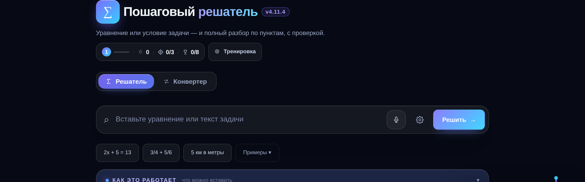
Ученик вбивает 2x + 5 = 13 — и видит не просто «x = 4», а весь путь: перенос слагаемых, деление, проверку подстановкой. Учитель собирает вариант на класс за минуту: листы для печати, ключ ответов, PDF в чат класса. Всё это лежит на устройстве и не требует интернета — ни в кабинете без Wi-Fi, ни в автобусе по дороге в школу.
| Раздел | Что делает |
|---|---|
| Решатель | Уравнения, примеры с дробями, проценты, единицы, геометрия, системы, текстовые задачи, линейная функция с графиком. Ввод — с клавиатуры, голосом или с фото задачи. Каждый ответ — с пошаговым разбором, проверкой и пояснением «почему так». Пока печатаешь, под полем видно, как понят пример и какой будет ответ; разбор можно смотреть коротко («Ответ»), подробно («По шагам»), совсем просто («Проще») или сразу решить похожую задачу. |
| Тренировка | Задания по 24 темам, адаптивная сложность, подсказки трёх уровней (направление → правило → шаг), проверка ответа и повторение по интервалам 1 → 3 → 7 → 16 → 30 дней. |
| Конвертер | 12 категорий единиц: длина, масса, площадь, объём, температура, давление, энергия, мощность, скорость, время, углы, валюта. С разбором, как получилось число. |
| Тесты | Пять заданий по теме с проверкой сразу; лучший результат по каждой теме виден на карточке. |
| Класс | Конструктор вариантов: класс, темы, число вариантов и заданий, листы A4 со строками для ответа, ключ для учителя, коды вариантов для раздачи. PDF и печать — в один клик. Ученик по коду решает ту же работу в приложении или на бумаге. |
| Дэш | Уровень и опыт, серия дней, квесты, награды, освоение тем полосками, слабые места, ошибки, контрольная, проверка уровня, отчёт для родителя. |
Дополнительно: четыре темы оформления (светлая, тёмная, неон, ретро), крупный шрифт, голосовой ввод «словами → формула», озвучка разбора, экспорт прогресса в файл и перенос по коду, свой генератор PDF с кириллицей, экспорт решения картинкой, PWA-режим и Android-приложение.
Разбор по шагам — с проверкой подстановкой и пояснением «Почему?» на каждом шаге:
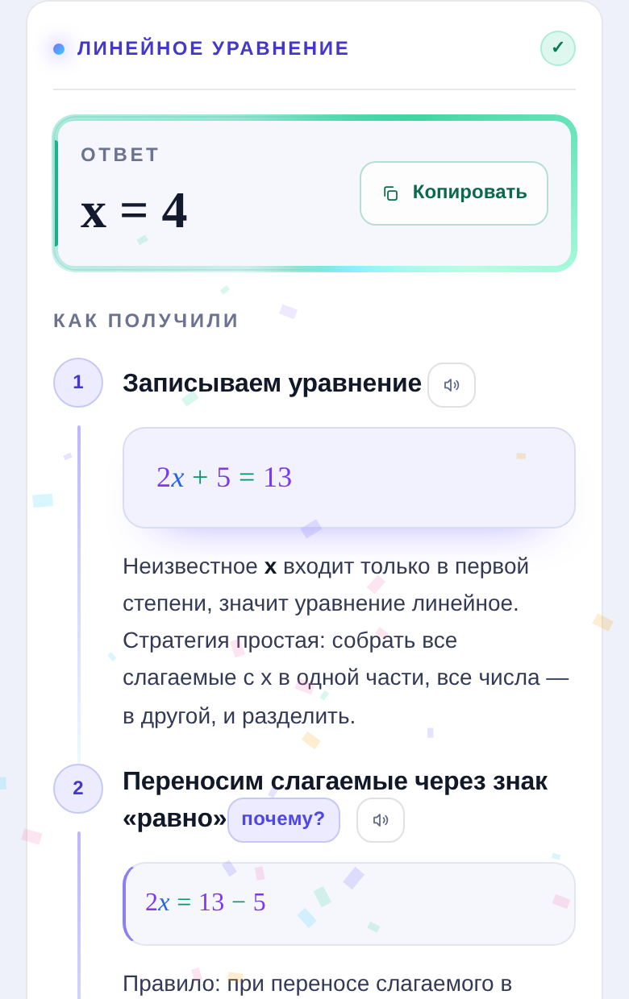
Задача с фото — офлайн-распознавание прямо в приложении: снимок → текст → решение. Кнопка «фото» стоит слева в поле ввода, рядом с голосом:
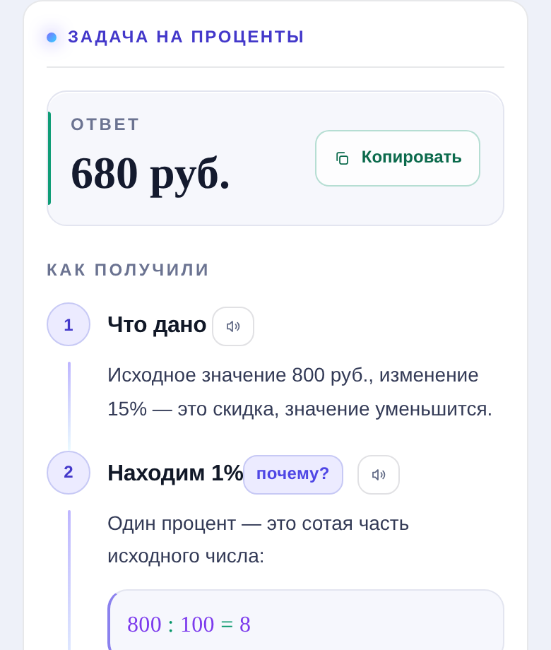
График линейной функции — SVG, а не картинка: масштаб квадратный, точки с подписями, таблица значений:
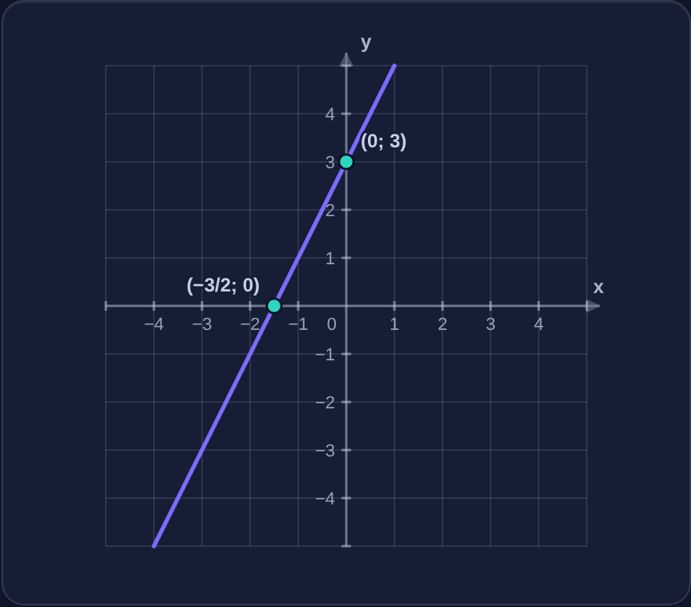
Тренировка, тесты и прогресс — подсказки, адаптивная сложность, освоение тем:
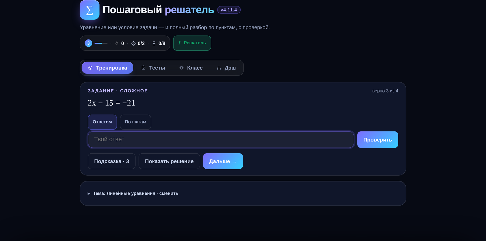
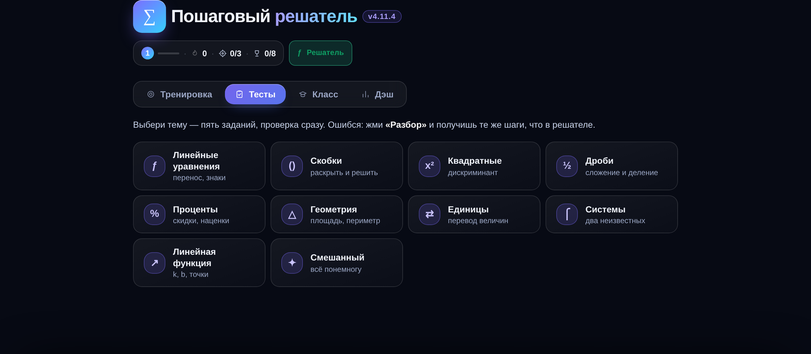
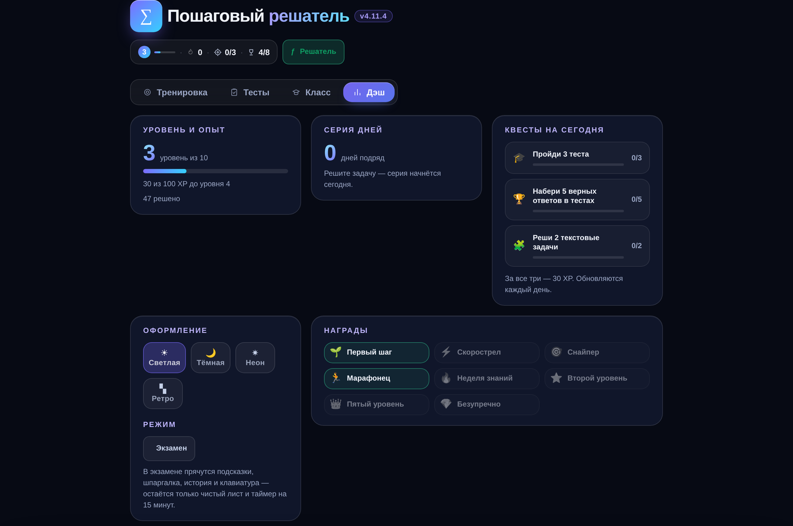
Конструктор вариантов и лист для печати — учитель собирает работу за минуту:
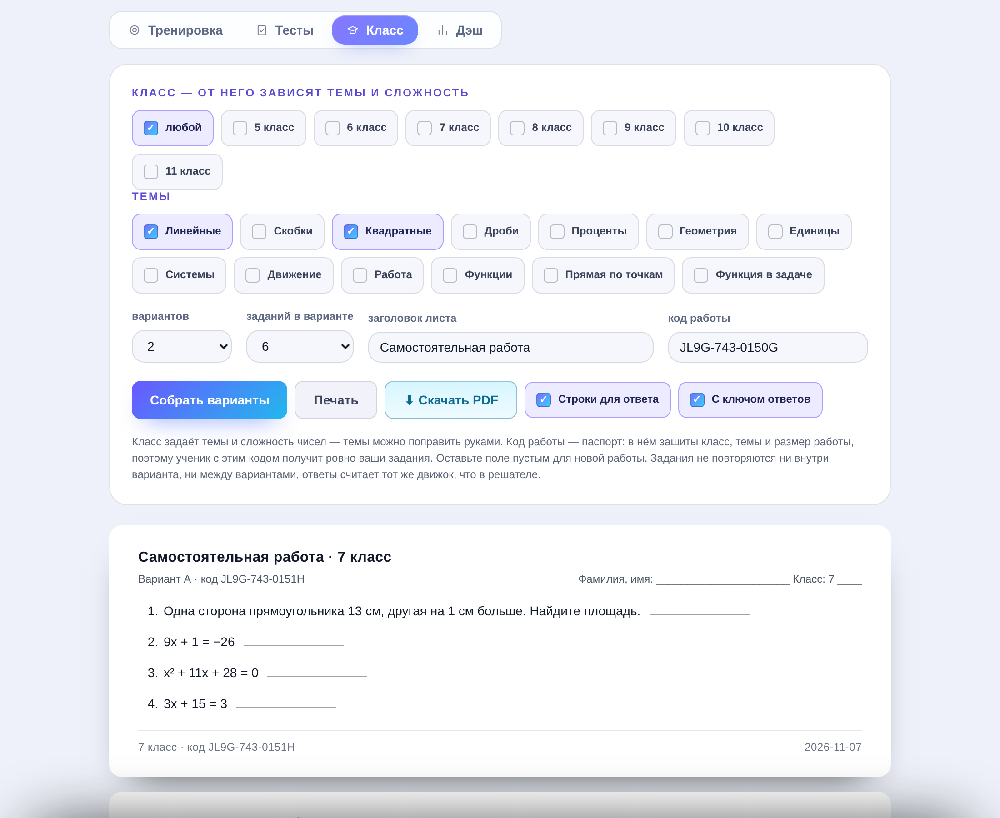
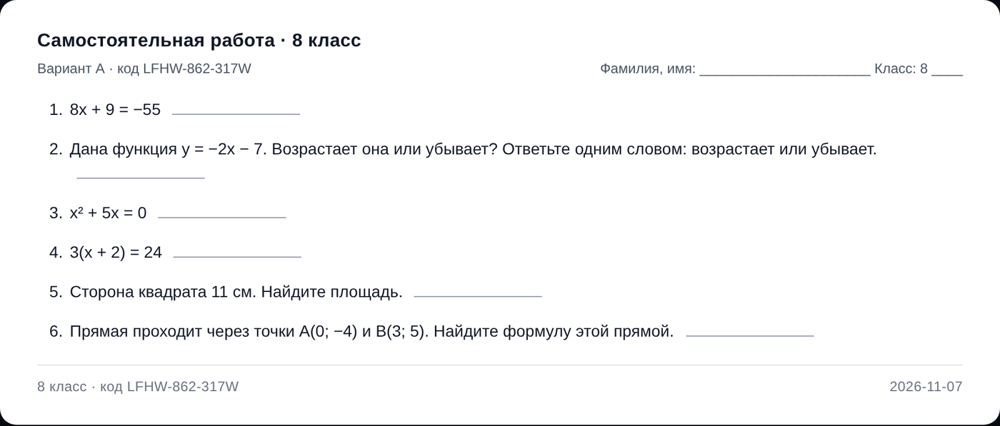
Коды вариантов — по одному на ученика; в коде зашит номер варианта:
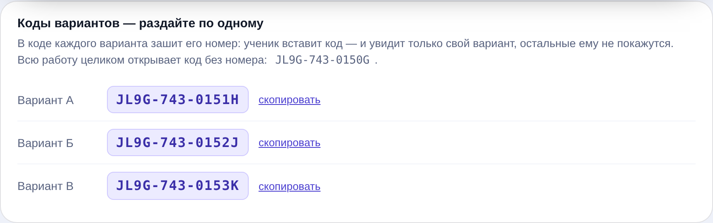
Ученик по коду учителя — своя работа, решает в приложении или на бумаге:
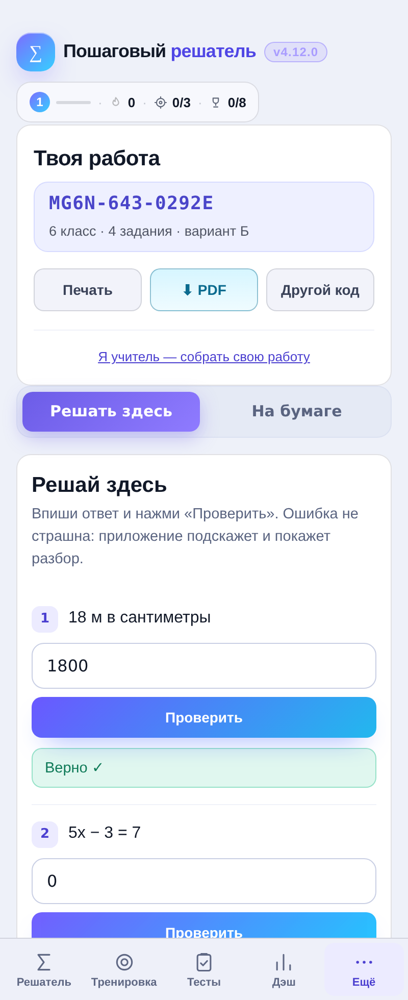
Настройки — отдельный экран — тема, ввод, экзамен, роль учителя:
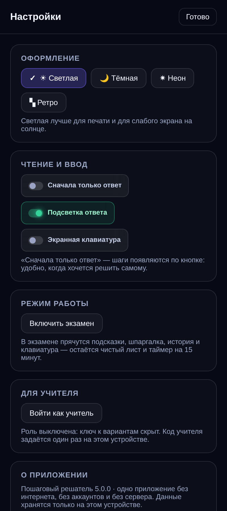
Конвертер единиц — 15 категорий, с разбором «как это считается»:
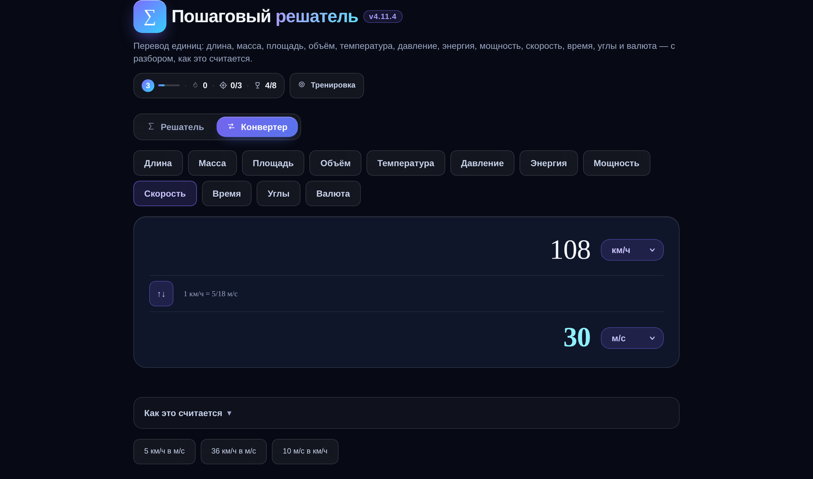
Криптовалюта, данные, частота — курсы по-прежнему вводятся вручную, без сети:
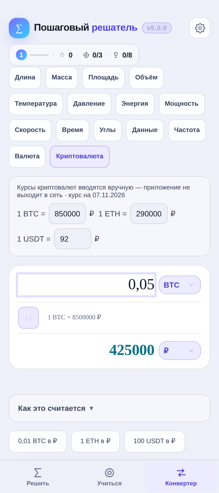
На телефоне — тот же файл, без отдельной сборки:
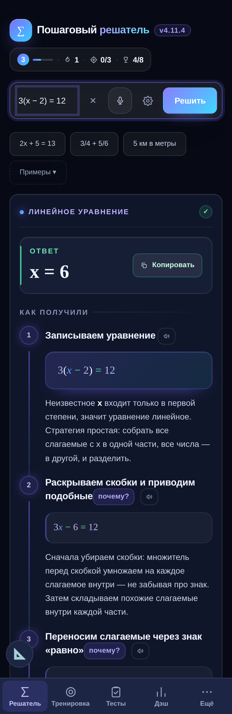
Скачать и открыть — всё работает офлайн, интернет не нужен даже для первого запуска.
git clone https://github.com/arsi3000/RushPWA
cd RushPWA/reshatel
# открыть index.html в браузере — этого достаточноЕсли нужен адрес http://localhost (для установки как приложения и проверки service worker):
python3 -m http.server 8080
# открыть http://localhost:80802x + 5 = 13), пример (1/2 + 1/3) или условие задачи («Турист шёл 2 часа со скоростью 5 км/ч. Какой путь он прошёл?»).Три раздела на верхнем уровне — больше ничего не надо держать в голове:
| Раздел | Что внутри |
|---|---|
| Решить | Поле ввода, примеры, пошаговое решение, шпаргалка и история решений. |
| Учиться | Подтабы: Тренировка (свободно или на время), Класс (код работы, листы, конструктор), Прогресс (уровень, серия, квесты, награды, мои данные). |
| Конвертер | 15 величин: длина, масса, площадь, объём, температура, давление, энергия, мощность, скорость, время, углы, данные, частота, валюта, криптовалюта. |
Служебное — в шапке: ⚙ настройки (оформление, ввод, экзамен, роль учителя) и пилюля прогресса, которая ведёт в «Прогресс». На телефоне разделы стоят в нижней панели, на компьютере — сегментом в шапке.
Раздел Класс (нужна роль учителя) собирает самостоятельную или контрольную работу:
У каждой работы есть код, например MG6N-643-0292E. Он несёт базу, класс, число вариантов и заданий, маску тем и номер варианта, поэтому на другом устройстве работа собирается один в один — достаточно вставить код в поле «код работы». Ключ ответов ученику при этом не показывается: роль учителя на его устройстве выключена. Старые коды без номера варианта (…0…, 13 знаков) понимаются как «вся работа».
Ученик по коду выбирает, как решать:
Пошаговая методичка на 10 разделов — как включить роль учителя, собрать работу, проверить, выгрузить и что делать, если что-то не работает: инструкция-учителю.pdf.
Коротко о шкале. За верное задание — 1 балл, за неверное или пропущенное — 0. Дальше проценты: 90–100 % — 5, 75–89 % — 4, 50–74 % — 3, ниже — 2. В контрольной внутри приложения баллы дробные: 1 — решил сам, 0,5 — понадобилась подсказка, 0 — открыл разбор шага, так что «списал у подсказки» не превращается в пятёрку.
Приложение открывается как обычная страница, а в консоли браузера доступны отладочные точки входа:
__selftest.open() // прогон самопроверки: 5125 проверок движка и генераторов
__solve("2x + 5 = 13") // один разбор, возвращает {kind, answer, steps}
__seedRandom(12345) // зафиксировать ГПСЧ — задания станут воспроизводимыми
__dbg.GEN_KEYS // список всех тем-генераторов
__clPdf.state() // состояние конструктора вариантов
__clPdf.makeCode("K57X", 8, 6, 2, ["quad","frac"]) // собрать код работы
__LF // модуль линейной функции: разбор формул, график
__LEARN // прогресс: попытки, освоение, ошибки, контрольныеУстройство кода, схема данных и порядок добавления новой темы — в ARCHITECTURE.md. Что именно решается и по каким формулам — в MATH.md. История версий — в CHANGELOG.md.
reshatel/
├── index.html ← всё приложение: разметка, стили, движок, интерфейс
├── lib/ ← распознавание с фото (tesseract.js 7 + русская модель), ~8,7 МБ
│ ├── tesseract.min.js
│ ├── worker.min.js
│ ├── tesseract-core-simd-lstm.wasm.js
│ └── rus.traineddata
├── sw.js ← service worker: офлайн-кэш, версия кэша в VERSION
├── README.md ← этот файл
├── ARCHITECTURE.md ← как устроен код
├── MATH.md ← темы, формулы и что приложение не умеет
├── CHANGELOG.md ← история версий
├── LICENSE ← MIT
└── docs/
├── screenshots/ ← 15 скриншотов для README
└── methods-for-teacher.pdfPWA-манифест вшит в index.html как data-URI, поэтому отдельного manifest.json нет: приложению хватает двух файлов.
index.html (~850 КБ). Ни сборки, ни npm, ни CDN.localStorage, схема данных версии 5 с миграциями; если браузер запрещает запись (приватный режим), приложение продолжает работать в памяти и предупреждает об этом.@media print: листы A4, без кнопок и фона, каждый вариант на своей странице.aria-*, работа с клавиатуры.Честный список, чтобы не было сюрпризов:
√50 вернёт объяснение, что точного значения в обыкновенной дроби нет, а не подмену.APK — тонкая WebView-обёртка (com.kibersolver.app) вокруг того же index.html, с мостом window.ReshatelApp.savePdf для сохранения PDF на телефон. Порядок сборки и подписи: ARCHITECTURE.md → Сборка APK.
MIT — можно использовать, изменять и распространять, в том числе в школе и в коммерческих целях. Подробности в LICENSE.
Автор: arsi3000.